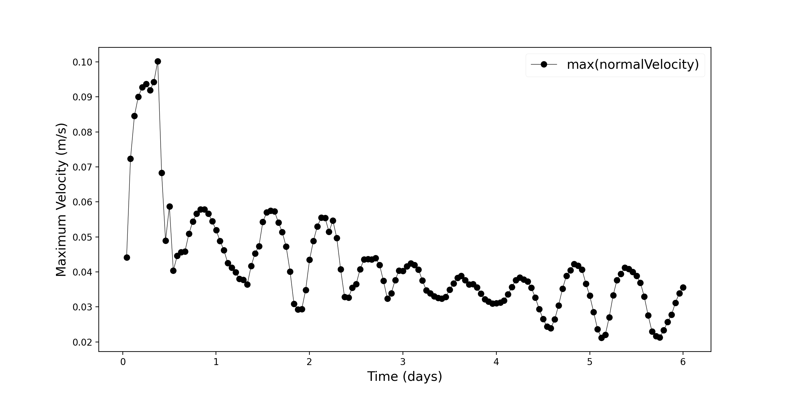
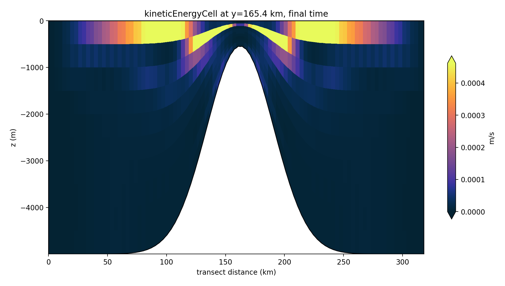
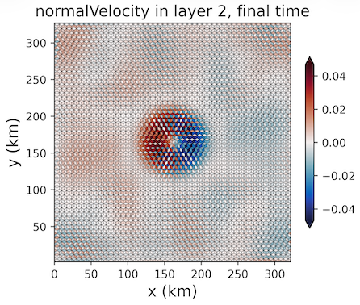

seamount
The ocean/seamount test is a standard sigma coordinate test problem, which is documented in
Beckmann and Haidvogel (1993), Haidvogel et al. (1993) and Shchepetkin and McWilliams (2003).
This case tests the error due to pressure gradients in tilted layers.
supported models
These tasks support both MPAS-Ocean and Omega.
The vertical coordinate is built in geometric height in either case, and is
converted to the pseudo-height (RefPseudoThickness) that Omega’s p-star
dynamics read when model = omega. Both models therefore start from the same
geometric layer positions, which is what makes the two comparable. The
conversion integrates gauge pressure down each column through the configured
equation of state, so it needs no p-star-specific initialization and no
reference pseudo-grid.
Because Omega’s linear equation of state has no reference temperature or
salinity, eos_linear_Tref and eos_linear_Sref must both be zero; the
Beckmann and Haidvogel reference state is folded into eos_linear_rhoref
instead.
Omega has no split time stepper, so it is limited by the barotropic gravity
wave. Rather than let the two models use different integrators, MPAS-Ocean
gives up its split-explicit scheme and both run RK4 at the same dt_per_km
until Omega gains a split time stepper. btr_dt_per_km therefore has no
effect unless time_integrator is set back to a split-explicit scheme.
variants
Each task exists in four trees, combining the equation of state with the
vertical coordinate used for the initial condition:
planar/seamount/{linear,nonlinear}/{sigma,zstar}.
The coordinate chooses how much the layers tilt:
sigma— the terrain-following coordinate, and the main target. Every layer is tilted relative to the isobars by construction, so the pressure gradient error is exercised throughout the water column.zstar— the control. Layers are nearly level, so the spurious velocity should be much smaller. Partial bottom cells are used here: z-star cuts the reference grid at the seafloor, and without snapping the seamount flanks produce bottom cells only centimetres thick. Setpartial_cell_type = fullfor the limiting case in which the layers are exactly level and the pressure gradient vanishes to machine precision.
The equation of state chooses whether density depends on pressure:
linear—rho = rhoref - alpha * (T - Tref) + beta * (S - Sref), with no pressure dependence at all.nonlinear— TEOS-10 for Omega and Jackett-McDougall (jm) for MPAS-Ocean, the closest nonlinear equation of state it has. The thermal expansion coefficient then varies along a tilted layer, which the linear trees cannot represent.
The two equations of state are given the same buoyancy stratification, as
described under initial conditions, so a difference in spurious
velocity between the linear and nonlinear trees is attributable to the
equation of state and not to a different N^2.
One caveat on cross-model comparison: TEOS-10 and Jackett-McDougall are
genuinely different functions, not two implementations of one, so the two
models are only expected to agree qualitatively in the nonlinear trees.
In the linear trees they solve the same equation of state and can be
compared directly.
default task
description
The test case begins with a zero velocity field and is unforced, so the exact solution is to remain motionless.
The seamount rises from a flat sea floor in the center of the domain.
In a pure z-level vertical coordinate without partial bottom cells (partial_cell_type = full), the pressure gradient will remain zero and induce no flow to machine precision. When any layer tilting is added, including from partial bottom cells, some flow is introduced by the pressure gradient error. This is fundamentally because the pressure must be extrapolated vertically at cell centers to the mid-depth of the edge. The default setting is the sigma coordinate. These are the images produced in the viz folder, which runs by default in this task because the 6 day forward run is too long to want to repeat just to get the plots.
{kind=link}

{kind=link}

{kind=link}

mesh
The domain is planar and periodic on the zonal and the
meridional boundaries. The 6.4 km resolution is tested by default,
which is set by the resolution config option. The domain is
320 km by 320 km, as given by the config options lx and ly,
which at 6.4 km is exactly 50 cells across; the hexagonal mesh is 58 cells
in the other direction, for 321.5 km.
Neither the domain size nor the resolution is prescribed by Beckmann and
Haidvogel — only the seamount shape and the stratification are. The
quantity that determines how hard this case is on a tilted coordinate is
the discrete steepness of the seamount, max |dh| / (h1 + h2) between
adjacent cells, which for a Gaussian seamount is about
1.5 * resolution / seamount_width, or 0.21 here.
vertical grid
The coordinate is set by the task tree, sigma or zstar, as described in
variants. coord_type therefore lives in
seamount_sigma.cfg / seamount_zstar.cfg rather than in the shared config
below. One may also test coord_type = z-level.
All of these are geometric coordinates, so all of them reach Omega through the same pseudo-height conversion, under either equation of state.
The 32 levels divide the 5000 m bottom depth into exact 156.25 m layers. That is a multiple of 16, which Omega prefers, and it sits in the range the literature uses for this case (20 in Beckmann and Haidvogel, 20-30 in Shchepetkin and McWilliams). It also keeps the z-star tree usable: with the 10 levels this task used previously, the 500 m summit column would have had a single level.
partial_cell_type = None means no alteration, so the original bottom depth
is used; partial snaps the bottom cell to at least min_pc_fraction of a
full cell, and full snaps it to a whole cell. The z-star tree overrides the
default below to partial, because without snapping the seamount flanks
produce bottom cells only centimetres thick.
# Options related to the vertical grid
[vertical_grid]
# Depth of the bottom of the ocean (m)
bottom_depth = 5000.0
# Number of vertical levels
vert_levels = 32
# The type of vertical grid
grid_type = uniform
# Whether to use "partial" or "full", or "None" to not alter the topography
partial_cell_type = None
# The minimum fraction of a layer for partial cells
min_pc_fraction = 0.1
initial conditions
Salinity is constant throughout the domain at the value given by the config
option constant_salinity (35 by default), read as practical salinity in
the linear trees and as absolute salinity in the nonlinear ones. The
initial density
is based on the formulas given in Beckmann and Haidvogel (1993) equations 15-16.
Temperature is then back-computed from that density, so the profile rather
than the temperature is what the two equations of state have in common.
In the linear trees the inversion is algebraic: the equation of state that
Polaris and both ocean models apply,
rho = rhoref - alpha * (T - Tref) + beta * (S - Sref), is solved for T
using the eos_linear_* options in the ocean section. The salinity term
matters: dropping it would leave the model’s density offset from the
Beckmann and Haidvogel profile by beta * S, which is harmless in
MPAS-Ocean but not in Omega, where the geometric-to-pseudo-height mapping
depends on the absolute density.
In the nonlinear trees the profile is read as a potential density
referenced to the surface, and conservative temperature comes from
gsw.CT_from_rho at zero reference pressure. It cannot be read as in-situ
density: TEOS-10 in-situ density at 5000 m is near 1050 kg m^{-3} from
compression alone, well outside the 1025-1028 kg m^{-3} range the profile
spans, so no temperature would reproduce it below about 1000 m. Referencing
to the surface also means the linear and nonlinear trees share a
buoyancy stratification exactly while their in-situ densities differ by more
than 20 kg m^{-3} at depth — which is the point, since that difference is
what a nonlinear equation of state contributes to the pressure gradient
error.
Omega receives conservative temperature and absolute salinity directly. For
MPAS-Ocean the nonlinear tracers are converted to potential temperature and
practical salinity at a nominal lon/lat location (config options
ocean:nominal_lon and ocean:nominal_lat, both defaulting to 0 degrees)
since the planar mesh has no geographic location.
forcing
N/A
vertical mixing and bottom drag
All vertical mixing is off in both models. The exact solution is a resting
ocean, so the only thing that would trigger convection is a spurious pressure
gradient — the quantity being measured — and convection is a known source of
MPAS-Ocean/Omega divergence, since Omega uses a single coefficient for both
convective diffusivity and viscosity. Convection and shear mixing are
switched off explicitly and the background diffusivity and viscosity are
zeroed, because Omega defaults them on; MPAS-Ocean additionally sets
config_use_cvmix = false, which leaves its vertical viscosity and
diffusivity at zero.
Only the coefficients are zeroed. The implicit vertical mixing solve itself stays on in both models, because that is what applies the implicit bottom drag; Omega aborts if the vertical mixing tendency is disabled while the bottom drag is implicit.
Bottom drag is implicit and constant in both models, at
bottom_drag_coeff = 1.0e-3. That is an order of magnitude below the value
comparable idealized planar cases use. The implicit drag damping timescale is
h_bot / (Cd * |u|), and the bottom layer over the seamount summit is only
about 16 m thick, so at 1.0e-2 a 5 cm/s spurious velocity would damp in
under half a day against a 6 day run — capping a bad pressure gradient while
leaving a good one untouched, and compressing the dynamic range this test
exists to measure.
time step and run duration
The time step for forward integration is automatically computed based on the gridcell size. The run duration is as follows.
[seamount_default]
# Run duration (hours)
run_duration = 144.
# Output interval (hours)
output_interval = 1.
config options
The following config section is specific to this test case:
# Options related to the seamount case
[seamount]
# Timestep per km horizontal resolution (s), shared by both models
dt_per_km = 4.0
# Barotropic timestep per km horizontal resolution (s), MPAS-Ocean only, and
# unused unless time_integrator is a split-explicit scheme
btr_dt_per_km = 2.5
# Time integrator, shared by both models
time_integrator = RK4
# Horizontal tracer advection order, shared by both models
horiz_adv_order = 3
# Constant bottom drag coefficient
bottom_drag_coeff = 1.0e-3
# The width of the domain in the across-slope dimension (km)
ly = 320
# The length of the domain in the along-slope dimension (km)
lx = 320
# Distance between two cell centers (km)
resolution = 6.4
# Bottom depth at bottom of seamount
max_bottom_depth = ${vertical_grid:bottom_depth}
# Logical flag that controls how the vertical profile of tracers. See Beckmann and Haidvogel 1993 eqn 15-16 (unitless)
# possible_values="linear, exponential"
seamount_stratification_type = exponential
# Density coefficient for linear vertical stratification (kg m^{-3})
seamount_density_coef_linear = 1024.0
# Density coefficient for exponential vertical stratification (kg m^{-3})
seamount_density_coef_exp = 1028.0
# Density gradient for linear vertical stratification, Delta_z rho in Beckmann and Haidvogel eqn 15 (kg m^{-3})
seamount_density_gradient_linear = 0.1
# Density gradient for exponential vertical stratification, Delta_z rho in Beckmann and Haidvogel eqn 16 (kg m^{-3})
seamount_density_gradient_exp = 3.0
# Density reference depth for linear vertical stratification (m)
seamount_density_depth_linear = 4500.0
# Density reference depth for exponential vertical stratification (m)
seamount_density_depth_exp = 500.0
# Height of sea mount, H_0 (m)
seamount_height = 4500.0
# Width parameter of sea mount, e-folding length (m)
seamount_width = 40.0e3
# Salinity of the water in the entire domain, read as practical salinity
# (PSU) for the linear trees and as absolute salinity (g kg^-1) for the
# nonlinear ones
constant_salinity = 35.0
The nonlinear trees add no config options of their own; they take their
equation of state from polaris.ocean.eos’s teos10.cfg and the nominal
location for the salinity conversion from the shared ocean section.
The Coriolis parameter is set in the shared coriolis section:
# config options for Coriolis
[coriolis]
# type of Coriolis: zero, constant, beta_plane, spherical, or rotated_sphere
type = constant
# the constant Coriolis parameter
constant_f = -1.0e-4
The linear trees configure their equation of state in ocean, through
seamount_linear.cfg. eos_linear_Tref must be zero, because Omega’s
linear equation of state has no reference temperature; the Beckmann and
Haidvogel reference state (1028 kg m^{-3} at T = 5 C, S = 35 PSU) is folded
into eos_linear_rhoref instead, as
1028.0 + 0.2 * 5.0 - 0.8 * 35.0 = 1001.0. eos_linear_beta and
eos_linear_Sref come from polaris.ocean.eos’s linear.cfg. These
options have no meaning in the nonlinear trees, which is why they live in
a per-variant config rather than the shared one.
# Options related the ocean component
[ocean]
# Equation of state reference density when T and S are the reference values
eos_linear_rhoref = 1001.
# Equation of state -drho/dT
eos_linear_alpha = 0.2
# Equation of state reference temperature
eos_linear_Tref = 0.
The nonlinear trees instead pick up polaris.ocean.eos’s teos10.cfg,
which sets eos_type = teos-10 and nothing else; Polaris maps that to jm
for MPAS-Ocean.
cores
The number of cores is determined by goal_cells_per_core and
max_cells_per_core in the ocean section of the config file.
short task
description
The short task is the default task run for 1 hour instead of 6 days. It
exists for regression testing: an hour is far too short for the spurious
circulation to develop, so it says nothing about the pressure gradient error,
but it is long enough to catch a change in the answer cheaply. It is
otherwise identical to the default task — same mesh, vertical grid, initial
condition, time step and physics — and it exists in all four trees.
The viz step is present but does not run by default here, since re-running
the task to get the plots costs almost nothing.
Two of the four are in the mpaso_pr and omega_pr suites:
planar/seamount/linear/zstar/short and
planar/seamount/nonlinear/sigma/short. That pair covers both equations of
state and both vertical coordinates in two runs rather than four.
time step and run duration
The time step is computed from the gridcell size exactly as in the default
task. Only the duration and output interval differ:
[seamount_short]
# Run duration (hours)
run_duration = 1.
# Output interval (hours)
output_interval = 0.5
The output interval is half the run duration so that the time series the
viz step plots has more than a single point in it.
config options
The short task adds no config options beyond the [seamount_short] section
above; everything else comes from the shared options listed under
default task.